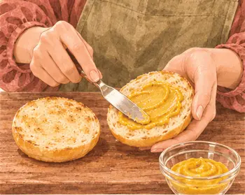
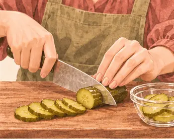

بروتين٢٠ غ
كربوهيدرات١٩ غ
دهون٥ غ
ألياف١.٠ غ
كالسيوم٦٦ ملغ
حديد٣.٢ ملغ
بوتاسيوم٣٥١ ملغ
فيتامين ج٢ ملغ
القيم الغذائية تقديرية للحصة الواحدة.

مكوّناتك
الوزن بالجرام. حدّد ما جهّزته.
| المكوّن | حصة | ٣ حصص | ٤ حصص |
|---|---|---|---|
| ٧٥ | ٢٢٥ | ٣٠٠ | |
| ٣٥ | ١٠٥ | ١٤٠ | |
| ٥ | ١٥ | ٢٠ | |
| ١٠ | ٣٠ | ٤٠ | |
| ١٥ | ٤٥ | ٦٠ |
الأدوات: مقلاة غير لاصقة، ملعقة مسطحة، ميزان حرارة

يلا، نطبخها معًا.
خذ وقتك، واتبع الصور على راحتك.
الخطوة ٠١
شكّل قرصًا بسمك ١ سم أعرض قليلًا من الخبز.
الخطوة ٠٢
اغسل يديك والطبق بعد لمس اللحم النيّئ.
الخطوة ٠٣
اطبخ بمقلاة غير لاصقة على نار متوسطة، ٣–٤ دقائق لكل جهة.
الخطوة ٠٤
افحص المركز من الجانب. أكمل الطهي حتى ٧١°م.

الخطوة ٠٥
افتح الخبز وادهنه بالخردل.

الخطوة ٠٦
قطّع الخيار شرائح رفيعة.
الخطوة ٠٧
رصّ الخس واللحم والخيار داخل الخبز.